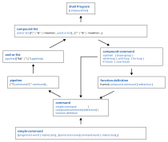

Shell Grammar

Overview of the Shell Command Language Grammar.
The fundamental building block of any shell program is the simple command, shown at the bottom of the diagram above. As we work our way up towards the top, moving along the left side of the diagram, we see how commands are combined together to form pipelines, and-or-lists, compound-lists, and finally a complete shell program. However, there is a secondary circular path that flows back towards the bottom through the constructs of compound commands and function definitions, to form recursively nested structures.
So far, we have covered simple commands, pipelines, and asynchronous (background) commands. Before we dive into the compound command and function definition grammar, let’s cover the missing pieces along the upwards path: and-or lists, and compound-lists.
And-or Lists
An and-or list is constructed of pipelines separated with the operators && (and) and || (or). Both operators have equal precedence and left-associativity. Evaluation of an and-or-list proceeds in a left-to-right direction.
For the && operator, the left-hand-side is evaluated; if the exit status is non-zero (false), the right-hand-side is not evaluated. Otherwise, if the exit status is zero (true), the right-hand-side is evaluated.
For the || operator, the left-hand-side is evaluated; if the exit status is zero (true), the right-hand-side is not evaluated. Otherwise, if the exit status is zero (false), the right-hand-side is evaluated.
Short-Circuit Evaluation
This behavior is called “short-circuit evaluation”: a logical evaluation strategy where the second operand of a logical expression is not evaluated if the first operand is sufficient to determine the overall outcome.
Exit Status
The exit status of the and-or list is the exit status of the last command that was executed.
Example
$ true && echo test
test
$ echo $?
0
$ false && echo test # The right-side is not evaluated
$ echo $?
1
$ false || echo test
test
$ echo $?
0
$ true || echo test # The right-side is not evaluated
$ echo $?
0
$ false || false
$ echo $?
1
$ false || echo a && echo b
a
b
$ true || echo a && echo b
b
$ true && echo a || echo b
a
Compound-Lists
A compound-list is essentially a nested list of commands.
Formally, it is a sequence of and-or lists separated by the operators ; and &, and <newline> characters.
Exit Status
The exit status of a compound-list is the exit status of the last foreground command that was executed in the list.